YAZIO — Fluxo automático
YAZIO — Diário/Dashboard
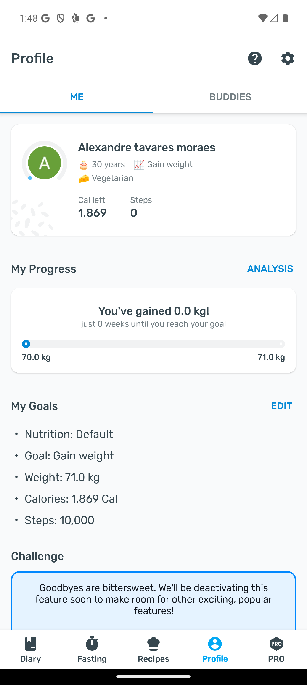
YAZIO — Adicionar refeição
YAZIO — Detalhe de alimento

YAZIO — Busca
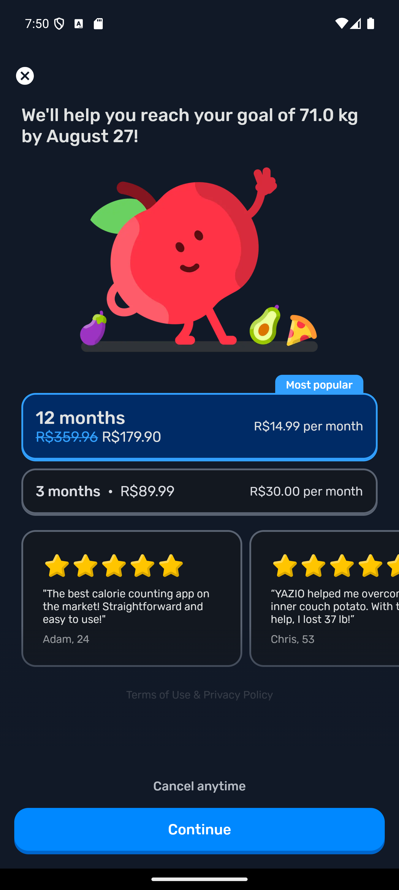

YAZIO — Configurações
YAZIO — Analytics (referência)
NutriTracker — Fluxo de abas (pós-build)
NutriTracker — Ações
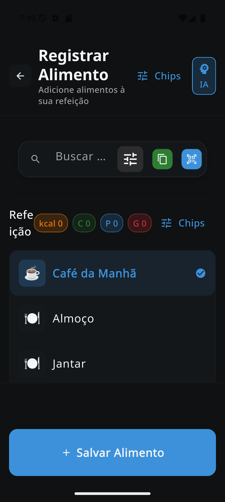

NutriTracker — Diário/Dashboard (pós-build)
NutriTracker — Diário com metas/ progresso por refeição
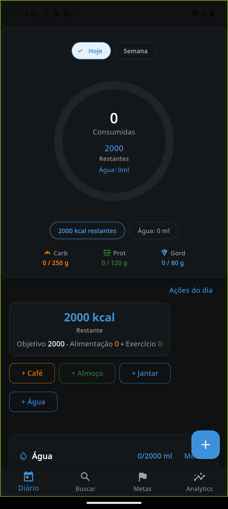
NutriTracker — Diário com estados vazios
NutriTracker — Diário polido (títulos/espaçamento)
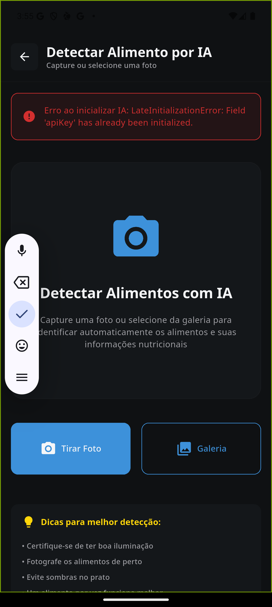
NutriTracker — Adicionar refeição
NutriTracker — Adicionar refeição (pós-build)
NutriTracker — Bottom sheet Adicionar (pós-build)
NutriTracker — Detalhe de alimento (pós-build)
NutriTracker — Detalhe com macros em destaque
NutriTracker — Detalhe com CTA fixo (pós-build)
NutriTracker — Wizard de Metas
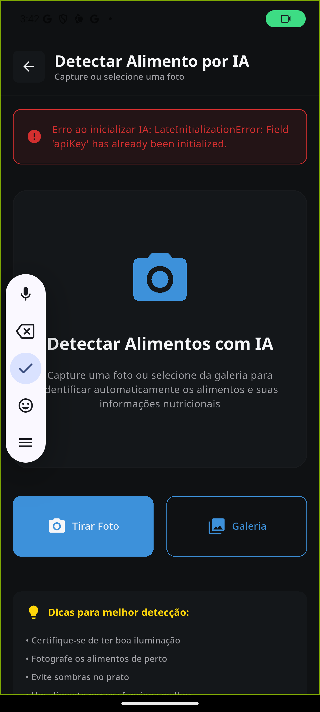


NutriTracker — Busca (pós-build)
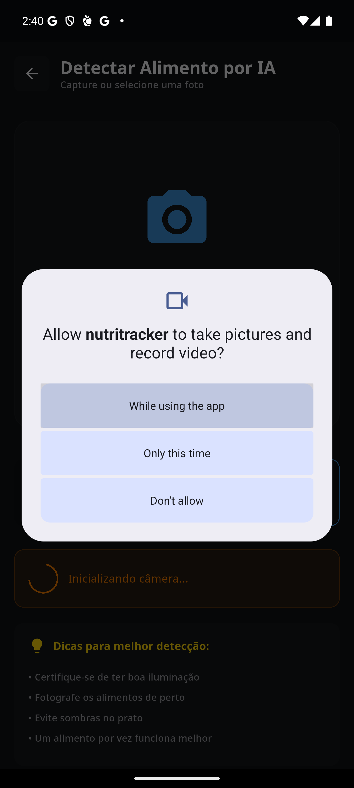
NutriTracker — Histórico de busca (pós-build)
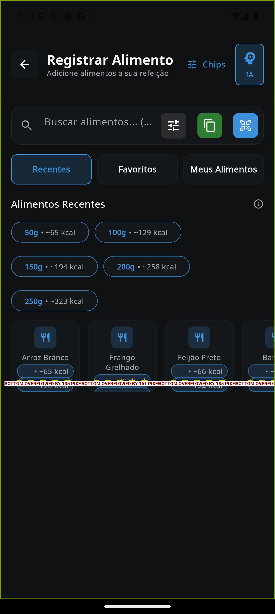
NutriTracker — Resultados com macros (pós-build)
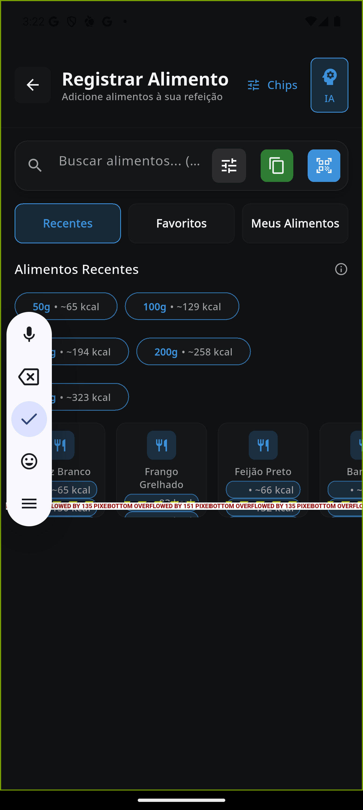
NutriTracker — Resultados com chips polidos
NutriTracker — Resultados por 100g (pós-build)
NutriTracker — Busca → Detalhe (100g + CTA)
NutriTracker — Configurações (pós-build)
NutriTracker — Analytics (Semana/Mês)


 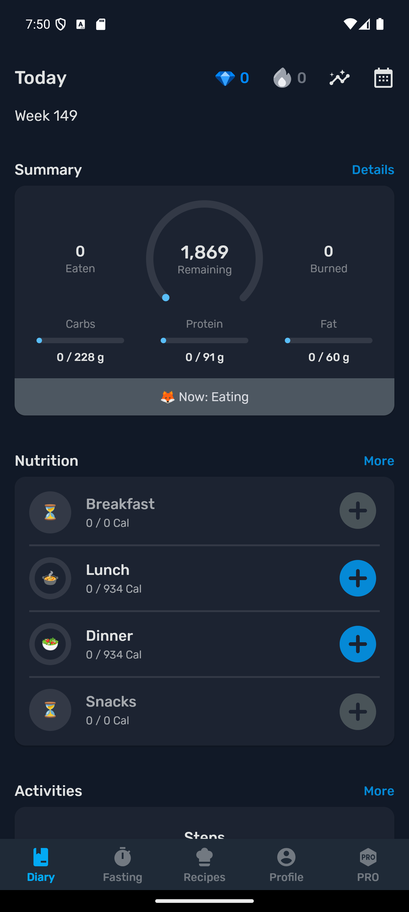
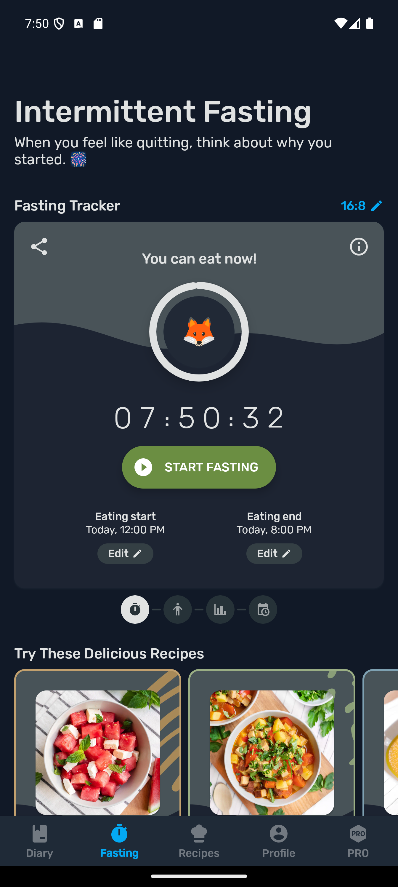
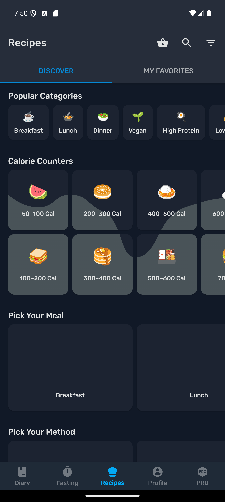
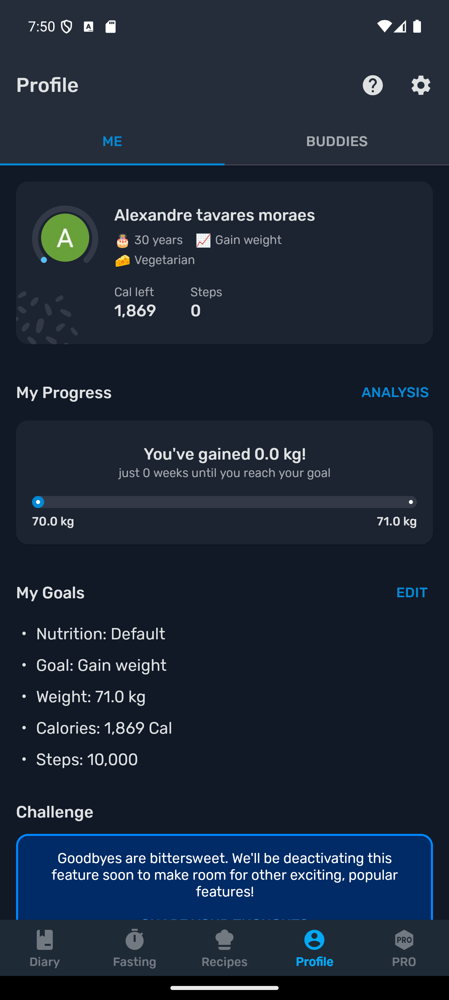
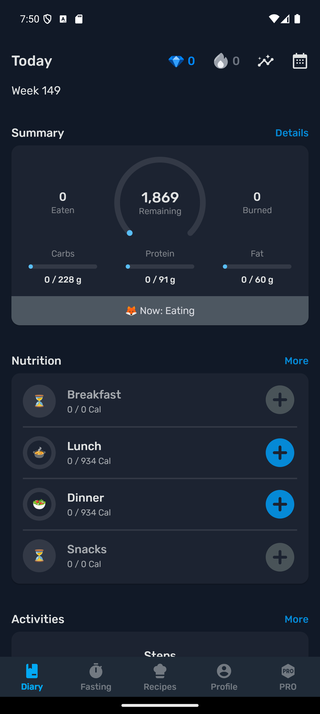
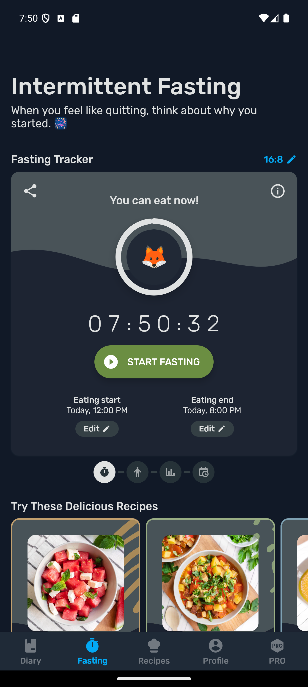
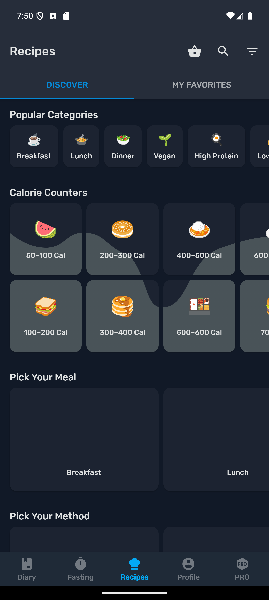
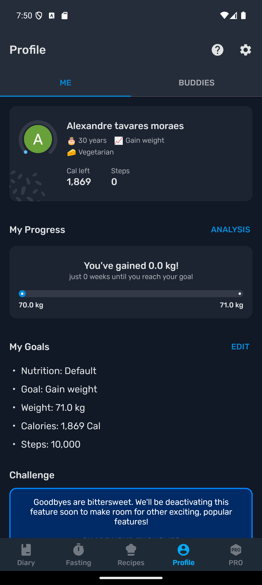